Section I (50 marks)
Answer all the questions in this section.
1. Without using a calculator, evaluate:(3 marks)
2½ - 11⁄5 of 2 ¼ - (-½)3
2. Given that 6 2n-3= 7776, find the value of n. (3 marks)
3. The base of a right pyramid is a rectangle of length 80 cm and width 60 cm. Each slant edge of the pyramid is 130 cm. Calculate the volume of the pyramid. (3 marks)
4. In the figure below ABCDEF is a uniform cross section of a solid. Given that FG is one of the visible edges of the solid, complete the sketch showing the hidden edges with broken lines.
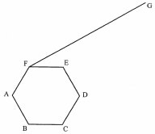
5. The lengths of three wires were 30m, 36 m and 84m. Pieces of wire of equal length were cut from the three wires. Calculate the least number of pieces obtained. (4 marks)
6. A two digit number is such that, the sum of its digits is 13. When the digits are interchanged, the original number is increased by 9. Find the original number. (4 marks)
7. (a) Using a ruler and a pair of compasses only, construct a quadrilateral PQRS in which PQ = 5 cm, PS = 3 cm, QR = 4 cm, PQR = 135° and SPQ is a right angle. (2 marks)
(b) The quadrilateral PQRS represents a plot of land drawn to a scale of l:4000. Determine the actual length of RS in metres. (2 marks)
8. Given that
. Find the mid point M of AB.
9. Two towns R and S are 245 km apart. A bus travelling at an average speed of 60 km/h left tow: R for town S at 8.00 a.m. A truck left town S for town R at 9.00 a.m and met with the bus c 11.00a.m. Determine the average speed of the truck. (4 marks)
10. In the parallelogram WXYZ below, WX = 10 cm, XY = 5 cm and WXY = 150°.
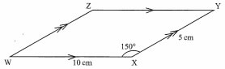
Calculate the area of the parallelogram. (3 marks)
11. Without using mathematical tables or a calculator, evaluate sin 30°-sin60 °/tan60°(3 marks)
12. Use matrix method to solve: 5x + 3J = 35
3x - 4y - -8
(3 marks)
13. Expand and simplify.
(2x + 1)2 + (x - 1)(x - 3).(2 marks)
14. Use mathematical tables to find the reciprocal of 0.0247, hence evaluate
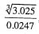 correct to 2 decimal places.(3 marks)
15. A Kenyan businessman intended to buy goods worth US dollar 20 000 from South Africa Calculate the value of the goods to the nearest South Africa (S.A) Rand given that 1 US dollar = Ksh 101.9378 and 1 S.A Rand = Ksh 7.6326. (3 marks)
16. A photograph print measuring 24cm by 15 cm is enclosed in a frame.
A uniform space of width x cm is left in between the edges of the photograph and the frame. If the area of the space i‹ 270cm', find the value ofx. (3 marks)
Section II (50 marks)
Answer any five questions from this section.
17. A school water tank is in the shape of a frustum of a cone. The height of the tank is 7.2 m and the top and bottom radii are 6m and 12 m respectively.
(a) Calculate the area of the curved surface of the tank, correct to 2 decimal places. (4 marks)
(b) Find the capacity of the tank, in litres, correct to the nearest litre. (3 marks)
(c) On a certain day, the tank was filled with water. If the school has 500 students and each student uses an average of 40 litres of water per day, determine the number of days that the students would use the water. (3 marks)
18. Two vertices of a triangle ABC are A (3,6) and B (7,12).
(a) Find the equation of line AB.(3 marks)
(b) Find the equation of the perpendicular bisector of line AB.(4 marks)
(c) Given that AC is perpendicular to AB and the equation of line BC is y = -5x + 47, find the co-ordinates of C. (3 marks)
19. The distance covered by a moving particle through point O is given by the equation, s = t3 - 15t2 + 63f - 10.
Find:
(a) distance covered when f = (2 marks)
(b) the distance covered during the 3rd second;(3 marks)
(c) the time when the particle is momentarily at rest;(3 marks)
(d) the acceleration when t - 5.(2 marks>
20. The diagram below shows triangle ABC with vertices A(- 1, -3), B(1, - 1) and C(0,0), and line M.
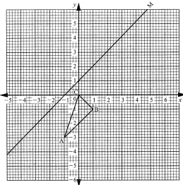
(a) Draw triangle A'B'C' the image of triangle ABC under a reflection in the line M. (2 marks)
(b) Triangle A"B"C" is the image of triangle A'B'C' under a transformation represented by the matrix T = (1 2) (0 1)
(i) Draw triangle A"B"C" (3 marks)
(ii) Describe fully the transformation represented by matrix T. (3 marks)
(iii) Find the area of triangle A'B'C' hence find area of triangle A"B"C". (2 marks)
21. The figure below shows two triangles, ABC and BCD with a common base BC = 3.4 cm. AC = 7.2 cm, CD = 7.5 cm and ABC = 90°.
The area of triangle ABC = Area of triangle ∠BCD.
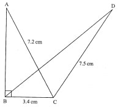
Calculate, correct to one decimal place:
(a) the area of triangle ABC;(3 marks)
(b) the size of ∠BCD; (3 marks)
(c) the length of BD;(2 marks)
(d) the size of ∠BDC.(2 marks)
22. (a) On the grid provided, draw the graph of y = 4-1/4x2for -4 <= x <= (2 marks)
(b) Using trapezium rule, with 8 strips, estimate the area bounded by the curve and the z-axis. (3 marks)
(c) Find the area estimated in part (b) above by integration. (3 marks)
(d) Calculate the percentage error in estimating the area using trapezium rule. (2 marks)
23. Three business partners Abila, Bwire and Chirchir contributed Ksh 120 000, Ksh 180 000 and Ksh 240 000 respectively, to boost their business.
They agreed to put 20% of the profit accrued back into the business and to use 35% of the profits for running the business (official operations).
The remainder was to be shared among the business partners in the ratio of their contribution. At the end of the year, a gross profit of Ksh 225 000 was realised.
(a) Calculate the amount:
(i) put back into the business;(2 marks)
(ii) used for official operations.(1 marks)
(b) Calculate the amount of profit each partner got.(4 marks)
(c) If the amount put back into the business was added to individuals's shares proportionately to their initial contribution, find the amount of Chirchir's new shares. (3 marks)
24. The equation of a curve is given as y=1/3x3-4x+5 Determine:
(a) The value of y when x = 3; (2 marks)
(b) The gradient of the curve at x = 3; (3 marks)
(c) The turning points of the curve and their nature. (5 marks)
= (35 - 36)⁄15 (2 + 1)⁄8
= -1⁄15 3⁄8 = - 8 45
7776 = 65
662n-3 = 65
2n -3 = 5
n = 4
Height h = √ 1302 - 502
= l20cm
Volume=1/3 x80x 60 x 120
192000cm2
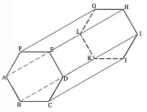
30 = 3x 2 x 5
36 = 2 x 2 x 3 x 3
84 = 2 x 2 x 3 x 7
G.C.D. -- 2 x 3 M1
= 6 AI
No of pieces obtained
30/6 + 36/6 + 84/6
= 25
x+y=13
(l0y + x) - (l0x + y) = 9 or - x+ y = 1
y-x=1/2y=14
y=7
x=6
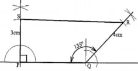
RS= (7.8 ± 0.1) cm
Actua x 40m
= 312 ± 4m
8. Given that OA = (2/3) and OB = (-4/5)
Find the mid point M of AB.
M: (2 + -4 , 3 + 5) 2 2
Distance covered by truck = 245 - 60 x 3
=65km
Time taken by the track = 11-9 = 2h
Average speed of truck
65/2
35.5km/hr
h = 5 sin 30°
= 2.5cm
Area = 2.5 x 10
=25cm3 11. Without using mathematical tables or a calculator, evaluate sin 30°-sin60 °/tan60°(3 marks)
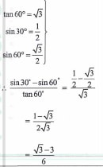
12. Use matrix method to solve:
5x + 3J = 35
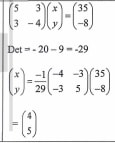
x=4
y=5
(2x+1)' +(x-1)(x-3) = 4x2 + 4x + 1+ x2 -4x + 3
= 52 + 4
correct to 2 decimal places.(3 marks)
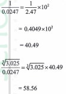
20000 dollars = 20000 x 101.9378
= Ksh. 2038756
In S.A. rand 20000 x 101.93.78/7.6326
=267112 rands
A uniform space of width x cm is left in between the edges of the photograph and the frame. If the area of the space is 270cm2, find the value ofx. (3 marks)
Area of space = 2x(15 +2x)z + 2x24 x
30a + 4x2 + 48x - 270
4x2 + 78x - 270 = 0
4x2 - 12 + 90 - 270 = 0
4x(x - 3) + 90(z - 3) - 0
4x(x - 3) + 90(x - 3 = 0
(4x + 90)(z - 3) = 0
x =- 22.5 or x = 3
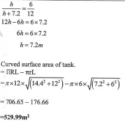
Volume = 1/3πR2H - 1/3πr2h
1/3xπx122x14.4-1/3πx62x7.2
= 1900.0 m3
Capacity = 1900 x 1000 litres
= 1900000 litres
Amount used by students per day. =40 x 500
=20000 litres
=No. of days = 1900000
=20000
= 95 days
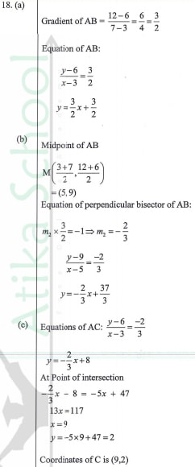
S(2)= 2 3 - 15(2)2 + 63(2) -10
- 8 - 60 +126 -10
= 64
S(s) = 33 -15(3)2 + 63(3) - 10
= 27 - 135 + 189 - 10
= 71
Distance in 3rd second
S(3) - S(2) = 71 - 64
= 7
V=ds/dt = 3t - 30t + 63 = 0 t2 -10t + 21 = 0 (t -3)(t-7) = 0 t = 3 or t = 7 (d) the acceleration when t = 5 (2 marks> Acceleration = dv/dt = 6t - 30 = 6(5) - 30 = 0 20. The diagram below shows triangle ABC with vertices A(- 1, -3), B(1, - 1) and C(0,0), and line M. (a) Draw triangle A'B'C' the image of triangle ABC under a reflection in the line M. (2 marks) 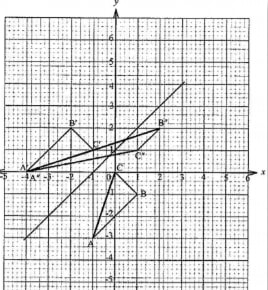 (b) Triangle A"B"C" is the image of triangle A'B'C' under a transformation represented by the matrix T = (1 2) (0 1) (i) Draw triangle A"B"C" (3 marks) 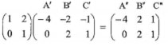 (ii) Describe fully the transformation represented by matrix T.(3 marks) It's a shear, The x axls invariant point B'(-2, 2) is mapped onto B"(2, 2) (iii) Find the area of triangle A'B'C' hence find area of triangle A"B"C". (2 marks) Area of triangle A'B'C'= 1/2 (3 + I) x 2 - 1.5 - 0.5 = 4 - 2 = 2 sq units Area of A'B'C' = Area of A'B'C' = 2 square units 21. The figure below shows two triangles, ABC and BCD with a common base BC = 3.4 cm. AC = 7.2 cm, CD = 7.5 cm and ABC = 90°. The area of triangle ABC = Area of triangle ∠BCD. Calculate, correct to one decimal place: (a) the area of triangle ABC;(3 marks) AB =√ 7.22 - 3.42 = 6.3cm Area of ∆ ABC 1/2x 6.3 x 3.4 = 10.7 cm2 (b) the size of ∠BCD; (3 marks) Area of ∆ ABC = Area of � 1/2 x 3.4 x 7.5 x sinθ = 10.7 Sin θ =10.7 x 2 /3.4 x 7.5 θ = 57. 1 Obtuse Angle BCD = 180 - 57.1 = 122.9 (c) the length of BD;(2 marks) BD2 = 7.52 + 3.42 - 2 x 3.4 x 7.5cos 122.9 = 95.51 BD = 9.8cm (d) the size of ∠BDC.(2 marks) Angle BDC: 3.4/Sin 8 = 9.8/Sin 122.9 Sin 0 = 3.4sin122.9/9.8 0 = 16.9° 22. (a) On the grid provided, draw the graph of y = 4-1/4x2for -4 ≤ x ≤ (2 marks) 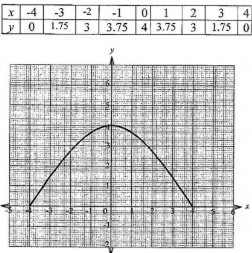 (b) Using trapezium rule, with 8 strips, estimate the area bounded by the curve and the z-axis. (3 marks) Area - =1/2 x1(0 + 0 + 2(1.75 + 3 + 3.75 + 4 + 3.75 + 3 +1.75) =1/2x1x2x21 = 21 sq units (c) Find the area estimated in part (b) above by integration. (3 marks) 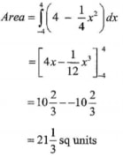 (d) Calculate the percentage error in estimating the area using trapezium rule. (2 marks) 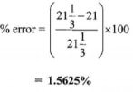 23. Three business partners Abila, Bwire and Chirchir contributed Ksh 120 000, Ksh 180 000 and Ksh 240 000 respectively, to boost their business. They agreed to put 20% of the profit accrued back into the business and to use 35% of the profits for running the business (official operations). The remainder was to be shared among the business partners in the ratio of their contribution. At the end of the year, a gross profit of Ksh 225 000 was realised. (a) Calculate the amount: (i) put back into the business;(2 marks) 20/100 x 225000 = 45000 (ii) used for official operations.(1 marks) 35 /100 x 225000 =78750 (b) Calculate the amount of profit each partner got.(4 marks) Amount for each contribution ratio contributions: Abiro: Bwire: Chirchir 120000:180000:240000 = 2 : 3 : 4 (c) If the amount put back into the business was added to individuals's shares proportionately to their initial contribution, find the amount of Chirchir's new shares. (3 marks) Abila 2/9 x 45/100 x 225 000 = 22500 Bwire 3/9 x 45/100 x 225000 33750 Chirchir = 4/9 x 45/100 x 225000 45000 24. The equation of a curve is given as y=1/3x3-4x+5 Determine: (a) The value of y when x = 3; (2 marks) y = 1/3x34x+5 When x-3 y = 1/3(3)34(2)+5 =2 Gradient at x = 3 (b) The gradient of the curve at x = 3; (3 marks) dy/dx=x2-4 at x = 3 dy/dx=(3)2-4 =5 (c) The turning points of the curve and their nature. (5 marks) 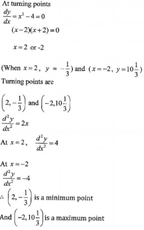
t2 -10t + 21 = 0
(t -3)(t-7) = 0
t = 3 or t = 7
(d) the acceleration when t = 5 (2 marks>
Acceleration = dv/dt = 6t - 30 = 6(5) - 30
= 0
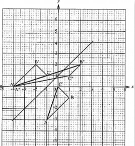
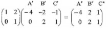
(ii) Describe fully the transformation represented by matrix T.(3 marks)
It's a shear, The x axls invariant point B'(-2, 2) is mapped onto B"(2, 2)
Area of triangle A'B'C'= 1/2 (3 + I) x 2 - 1.5 - 0.5
= 4 - 2
= 2 sq units
Area of A'B'C' = Area of A'B'C'
= 2 square units
AB =√ 7.22 - 3.42 = 6.3cm Area of ∆ ABC 1/2x 6.3 x 3.4
= 10.7 cm2
Area of ∆ ABC = Area of � 1/2 x 3.4 x 7.5 x sinθ = 10.7
Sin θ =10.7 x 2 /3.4 x 7.5
θ = 57. 1
Obtuse Angle BCD = 180 - 57.1
= 122.9
BD2 = 7.52 + 3.42 - 2 x 3.4 x 7.5cos 122.9
= 95.51
BD = 9.8cm
Angle BDC: 3.4/Sin 8 = 9.8/Sin 122.9
Sin 0 = 3.4sin122.9/9.8
0 = 16.9°
22. (a) On the grid provided, draw the graph of y = 4-1/4x2for -4 ≤ x ≤ (2 marks)
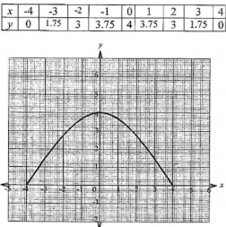
Area - =1/2 x1(0 + 0 + 2(1.75 + 3 + 3.75 + 4 + 3.75 + 3 +1.75)
=1/2x1x2x21
= 21 sq units
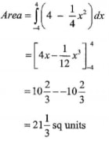
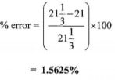
20/100 x 225000
= 45000
35 /100 x 225000
=78750
Amount for each contribution ratio contributions: Abiro: Bwire: Chirchir
120000:180000:240000
= 2 : 3 : 4
Abila 2/9 x 45/100 x 225 000
= 22500
Bwire 3/9 x 45/100 x 225000
33750
Chirchir = 4/9 x 45/100 x 225000
45000
y = 1/3x34x+5
When x-3
y = 1/3(3)34(2)+5
=2
Gradient at x = 3
dy/dx=x2-4
at x = 3
dy/dx=(3)2-4
=5
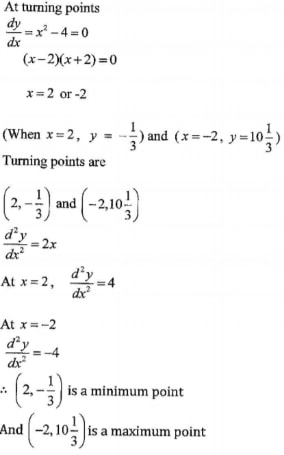